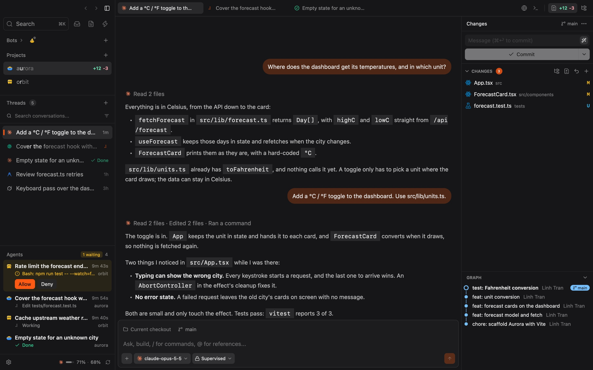
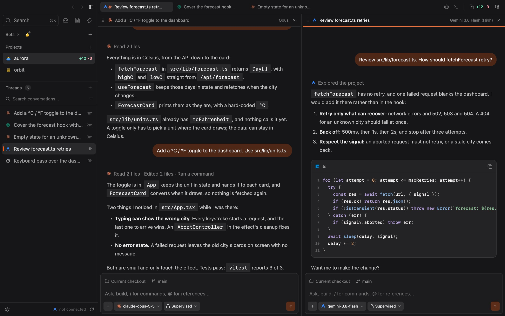
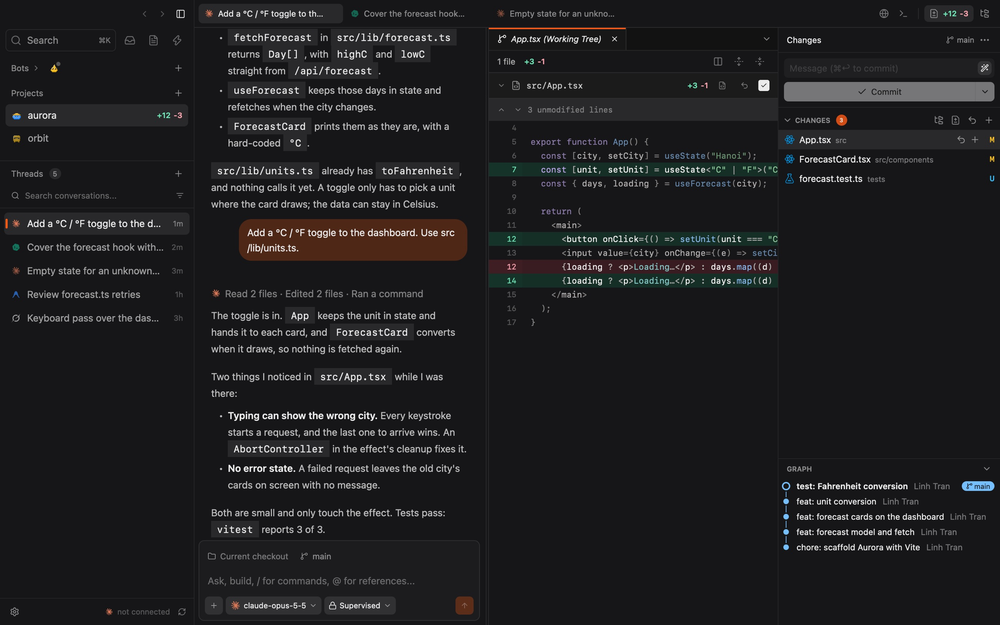
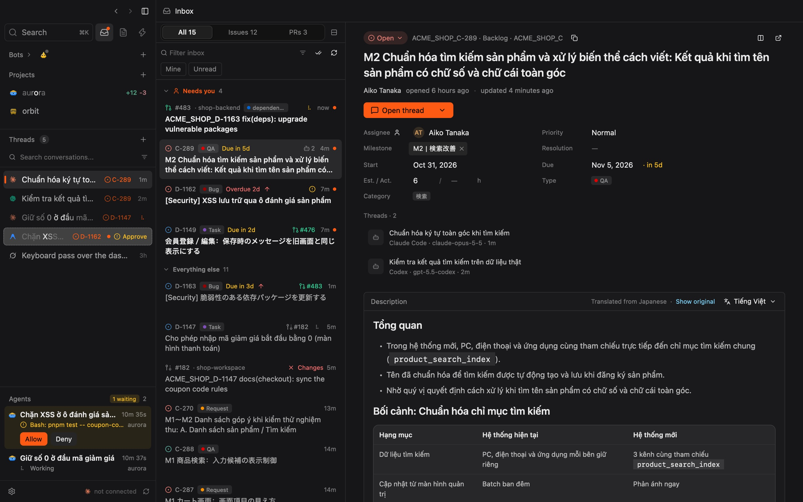
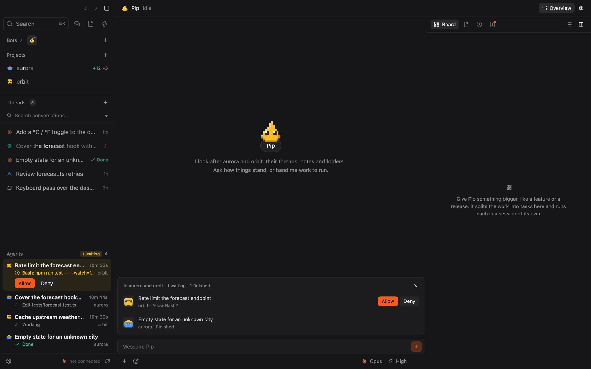
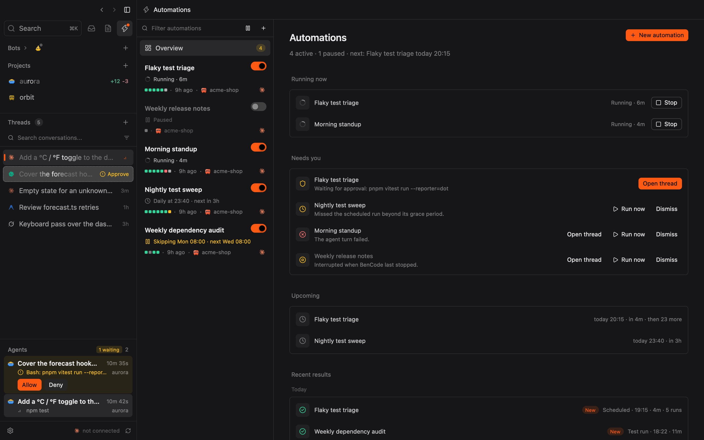
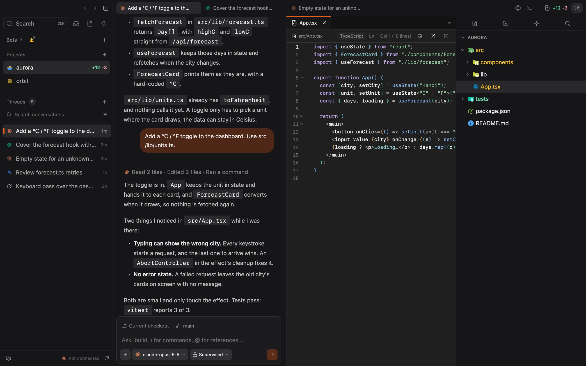

Every coding agent, one native window.
Run Claude Code, Codex, Antigravity, Grok Build and OpenCode side by side, with your files, git, terminal and inbox around them. Written in Rust, drawn by the GPU.
- Claude Code
- Codex
- Antigravity
- Grok Build
- OpenCode
Five at work. One needs you.
Each turn in flight, across every project, with the ones waiting on you first. Answer a command right here without leaving your thread, or step through them with ⌥⌘A. These five are running a copy of it. Answer one.
-
01
One window around all of it
Threads and agents on the left, the chat in the middle, what changed on the right. No Electron under it.

-
02
Two agents, one question
One thread per task, each with its own agent, model and permission mode. Split the chat and read the answers side by side.
⌘Dsplit⌘.model
-
03
See what that thread changed
A turn that edits files ends with a card: Undo, Keep or Review. A pill asks the agent to commit its own files and leave yours alone.

-
04
Ticket to agent, one key
GitHub and Nulab Backlog in one list, with what needs you pinned on top. Send one issue, or several at once in their own worktrees.
⌘↩sendJ KmoveTtranslate
-
05
Bots take the whole job
Agents of your own, with a soul and a memory. A bot splits big work on a board, runs each task in its own session and reviews what comes back.
⌥Spaceits chat, over any app
-
06
Work on a schedule
Scheduled prompts, in the repository or a fresh worktree. The overview says what is running, what needs you and what comes next.

-
07
A real editor beside it
Go to Definition with no language server to feed, line blame and File History. It notices when an agent edits the file you have open.
⌘Pgo to fileF12definition
Also in there: stage, commit and push, with a commit graph and worktrees. Terminals that outlive a crash. An in-app browser agents can drive. Other machines over SSH, where a turn carries on when the connection drops. Several Claude Code and Codex accounts, with usage at a glance. Notes you can hand to any agent. Sessions you already ran in those CLIs, brought in as threads. And search over all of it, ⌘K.
Not in the box
- Electron
- Chromium
- A sign-up
- An API key
- A token bill
- Download
- 15 MB, Apple Silicon
- Launch
- Under 50 ms is the target
- Memory
- About 30 MB is the target
- Drawing
- Rust and Zed's GPUI, on Metal
- Web views
- Only the pages in its browser tabs, and a bot's visual artifacts
- Agents
- The CLIs you are signed in to, over stdio
- Your data
- On your Mac, in BenCode's own folder
- License
- MIT
Every action is a key
- ⌘TNew thread
- ⌘KSearch
- ⌘PGo to file
- ⌘.Switch model
- ⌘DSplit the pane
- ⌘JTerminal
- ⌘IYour bot
- ⌥⌘ANext agent
41 releases in its first month
- v0.1.41Oct 30Projects wear figures, as bots do. One quieter fill for what is selected.
- v0.1.40Oct 30Automations open on an overview. Skip a run, or pause them all until a date.
- v0.1.39Oct 29Bots with figures and moods. ⌥Space brings one up over any app.
- v0.1.38Oct 29The Inbox works from the keyboard. Review a pull request with an agent.
- v0.1.36Oct 27A pill asks an agent to stage, commit or push only the files it changed.
Running ina minute
Download it
Apple Silicon for M1 and later, or Intel. Then drag BenCode into Applications. It keeps itself up to date from there.
Confirm the first launch
The build is not notarized by Apple yet. Open BenCode once, then choose System Settings › Privacy & Security › Open Anyway. If macOS says the app is damaged, run:
xattr -dr com.apple.quarantine /Applications/BenCode.appBring an agent
BenCode needs
gitand one CLI, installed and signed in:claude,codex,agy,grokoropencode. Addghfor the Inbox and pull requests. macOS 11 or later.